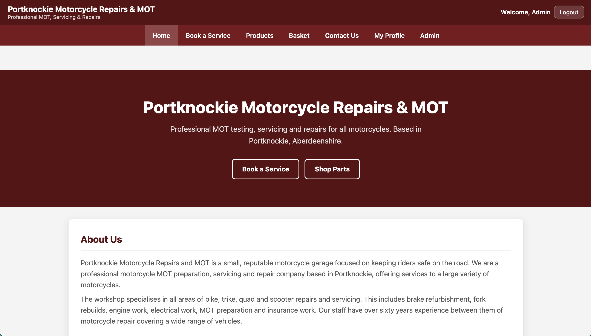

Portknockie Motorcycle Project
Motorcycle service & e-commerce platform

A complete web application for a motorcycle business, combining customer accounts, servicing bookings, e-commerce, checkout, administration and contact management in one server-rendered system.